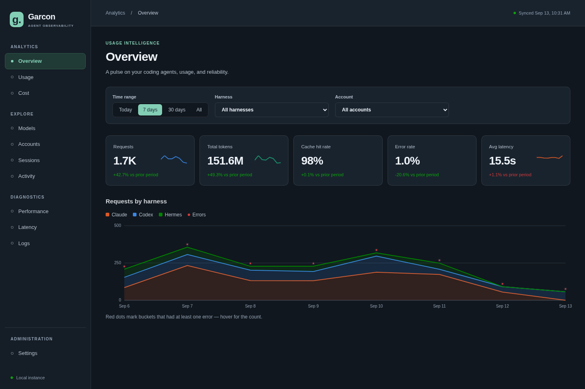
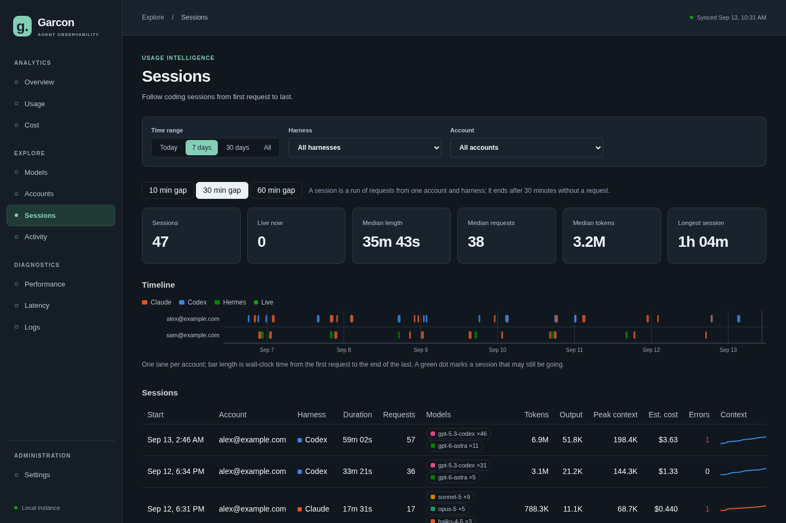

Garcon
Observability for coding agents. One tiny local proxy sits in front of Claude Code, Codex, OpenClaw, Hermes or anything else you run, records what every call cost in tokens, and shows it all in one dashboard, across accounts, tools and, with sync on, every machine you work from.

The problem
Coding agents burn tokens on your behalf all day, and the evidence is scattered. Each tool keeps its own logs in its own format, each provider shows a different slice of the bill, subscription plans hide the per-call cost entirely, and none of it lines up across the laptop, the desktop and the server you also run agents on. Questions that should be trivial are not: which account is doing the work, which model, how much context is being re-read every turn, how much of that is cache hits, how fast the model is streaming, and what all of it would cost at list price.
The usual answer is a gateway such as LiteLLM: put a proxy in the path of every LLM call and observe the traffic there instead of in each tool. That is exactly the value proposition of Garcon. The difference is where the line is drawn.
What Garcon does
Each agent is pointed at http://127.0.0.1:4141/<harness>/<account>/<provider>/, where harness names the tool, account is the login it uses (an email), and provider is the upstream. Completion calls are appended to a local log with the model and the token counts the provider reported: uncached input, cache read, cache write and output. Claude Code and Codex talk to one provider each, so their URLs omit the segment: /claude/<account>/ implies anthropic and /codex/<account>/ implies chatgpt.
| Segment | Upstream | Recorded calls |
|---|---|---|
anthropic | api.anthropic.com | /v1/messages |
openai | api.openai.com | /v1/responses, /v1/chat/completions |
openrouter | openrouter.ai | /api/v1/chat/completions |
chatgpt | chatgpt.com | /backend-api/codex/responses (ChatGPT-subscription Codex) |
Because it is a pure pass-through, it works with subscription logins too: Claude Code on a claude.ai plan and Codex on a ChatGPT plan keep authenticating exactly as before, and Garcon still sees the token counts those calls report. That is the case a gateway that re-issues requests under its own keys cannot cover.
Compared with a gateway like LiteLLM
Same idea, different scope. A gateway is a piece of infrastructure: it fronts many providers, translates between APIs, routes and retries, issues virtual keys, enforces budgets, and stores its telemetry in a database it runs. Garcon deliberately does none of that. It is one binary that does one job for one person, and it keeps the data on the machine unless you say otherwise.
| Garcon | LiteLLM-style gateway | |
|---|---|---|
| Observability across tools, accounts and machines | Yes | Yes |
| Requests and replies | Forwarded byte for byte; the provider's own auth, streaming and errors pass straight through | Normalised to one API, re-issued with the gateway's keys |
| Subscription logins (claude.ai, ChatGPT plans) | Work unchanged; usage is still recorded | Generally not; the gateway needs API keys |
| Routing, retries, fallbacks, budgets, virtual keys | None, by design | Yes, that is the product |
| Where the data lives | A JSONL file in your home directory; optionally a table in a Supabase project you own | The gateway's Postgres, or a hosted logging service |
| Footprint | Two Go files, no dependencies, one binary with the dashboard inside it, loopback only | A Python service plus its database, usually a container or a hosted deployment |
| Setup | One install script, then a base URL per agent | A config file of models and keys, a deployment, then a base URL per client |
| Multiple people or teams | No; one person, any number of machines | Yes |
If you need a control plane for a team, run a gateway. If you want to know what your own agents are doing, with nothing to operate and nothing leaving your machine unless you choose, that is Garcon.
What you get
- One picture of everything: requests, tokens and their composition by harness, account, model and device, over any time range, with period-over-period deltas.
- Cost you can reason about: estimated spend at published list prices (never a bill; subscriptions bill differently), cache savings, blended price per million tokens, run rate, and an editable price table.
- Sessions: calls grouped into coding sessions per account, tool and machine, with context growth, peak context, busy time and cost per session.
- Performance: generation speed and time to first byte by model, latency against output size, and the proxy's own overhead measured separately so it is never confused with the model's time.
- Every request: a sortable, filterable log with CSV export, and a JSON endpoint for anything else.
- Every machine: switch on sync and each dashboard shows the union of all your devices, pulled from a table in your own Supabase project.

What it records, and what it never touches
Per completion call: time, harness, account, provider, model, HTTP status, duration, connection timings, and the four token counts. That is the whole row. Prompts, replies, tool calls, file contents, API keys and session ids are never read into the log; the proxy forwards them and forgets them. The dashboard binds to loopback only and stores no credentials. With sync off, which is the default, Garcon makes no network calls of its own at all.
Quick start
- Install
scripts/install.sh --servicebuilds the dashboard and the binary and runs it at login. - Point an agent at itone environment variable for Claude Code, a provider entry for Codex, a base URL for anything else. Make one short call and watch the row appear.
- Add your other machineswhen you want them in the same picture: one script on the first machine, a URL and a key on the rest.